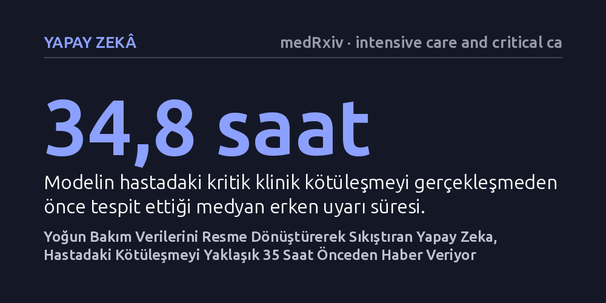

YAPAY-ZEKA · medRxiv · intensive care and critical care medicine · 2026-09-08
Yoğun bakımdaki farklı türde hasta verilerini tek bir görsel belleğe sıkıştıran bir yapay zeka modeli geliştirildi ve 54 binden fazla hastada test edildi. Model, verileri sekiz kat sıkıştırmasına rağmen doğruluk kaybetmeden hastaların kritik kötüleşmelerini ortalama 35 saat önceden tahmin edebildi.
Farklı tıp verilerini ayrı modellerle işlemek yerine hepsini resme dönüştürüp tek bir görsel yapay zeka belleğinde toplamanın, yoğun bakımdaki hayati riskleri saatler öncesinden öngörmede etkili olduğunu gösteriyor.

Yoğun bakım üniteleri, hastane ortamında en yoğun verinin üretildiği birimlerdir. Bir hastanın başında kalp ritmini takip eden elektrokardiyogram (EKG) dalgaları, tansiyon ve nabız gibi hayati bulgular, akciğer röntgenleri, kan tahlili sonuçları ve hekimlerin yazdığı klinik notlar sürekli birikir. Günümüzdeki klinik yapay zeka uygulamaları ise çoğunlukla bu veri kaynaklarının her biri için ayrı ayrı geliştirilmiş, parçalı modeller kullanır. Kimi model yalnızca röntgene odaklanırken, kimi sadece laboratuvar testlerini okur ve hekimin önüne birbirinden kopuk risk skorları koyar.
Araştırmacıların yola çıkış noktası, bu dağınık yapıyı kökten değiştirebilecek temel bir soruya dayanıyordu: Farklı kaynaklardan gelen tüm bu klinik verileri ayrı sistemlerle işlemek yerine, hepsini iki boyutlu birer resme çevirip tek bir görsel yapay zeka modelinde toplamak mümkün olabilir mi? Eğer tüm tıp verileri ortak bir görsel dilde buluşturulabilirse, yapay zekanın hastanın gidişatını yalnızca anlık bir risk rakamıyla değil, geleceğe uzanan dinamik bir klinik seyir haritası olarak öngörebileceği düşünüldü.
Bu hipotezi sınamak amacıyla araştırmacılar, Amerika Birleşik Devletleri'ndeki yaygın yoğun bakım veri tabanı MIMIC-IV üzerinde geriye dönük bir modelleme çalışması yürüttü. Çalışmaya 24 saatten uzun süre yatan 54.551 yetişkin hasta, 68.546 hastane yatışı ve 74.829 yoğun bakım kalışı dahil edildi. Modelin başarısını adil biçimde değerlendirebilmek için hasta düzeyinde kesin ayrım yapıldı; böylece test aşamasındaki hastaların hiçbir verisi eğitim sürecine sızdırılmadı.
Yöntemin merkezinde, beş farklı yoğun bakım veri kaynağını (yapılandırılmış elektronik kayıtlar, anlık hayati bulgular, 10 saniyelik EKG sinyalleri, göğüs röntgenleri ve klinik notlar) iki boyutlu piksellere dökerek görselleştirmek yatıyordu. Bu görüntüler, genel görme kalıplarını çok iyi tanıyan dondurulmuş bir DINOv2 görme dönüştürücüsü aracılığıyla kodlandı. Ardından çapraz dikkat mekanizmaları kullanılarak tüm bu heterojen kaynaklar, 1024 boyutlu ortak bir 'Klinik Görsel Bellek' içine optik olarak sıkıştırıldı. Ekip ayrıca veri yoğunluğunu azaltmanın sınırlarını görmek için piksel alanını yüzde 1'e kadar düşürerek sistemin dayanıklılığını da test etti.
Çalışmanın sonuçları, farklı tıp verilerini tek bir görsel belleğe aktarmanın klinik tahmin doğruluğunu koruduğunu gösterdi. Geliştirilen model, hastaların sonraki 48 saat içindeki ölüm riskini tahmin etmede 0,852 düzeyinde bir eğri altı alan (AUROC) başarısına ulaştı. Benzer şekilde, akut böbrek hasarı gelişimini 0,699, çoklu organ yetmezliği riskini (yüksek SOFA skoru) 0,723 ve yoğun bakımdan sağ taburcu olma durumunu 0,742 AUROC değeriyle öngördü.
Araştırmanın dikkat çeken teknik bulgusu ise veri sıkıştırma verimliliğinde ortaya çıktı. Kaynak piksel alanı sekiz kat azaltılarak bilgi darboğazı giderildiğinde bile, modelin 48 saatlik ölüm tahmin başarısının yüzde 98,9'u korunabildi. Üstelik sistem yalnızca tekil bir ihtimal hesaplamakla kalmadı; hastanın klinik tablosundaki kritik kötüleşmeleri medyan 34,8 saat (çeyrekler arası aralık 17,5 ile 43 saat) öncesinden haber veren proaktif bir erken uyarı haritası üretti.
Elde edilen sonuçlar, yoğun bakım ortamındaki karmaşık ve birbirinden kopuk bilgi akışını tek bir görsel dile çevirmenin yapay zeka mimarisini ne kadar sadeleştirebileceğini ortaya koyuyor. Ayrı veri türleri için çok sayıda karmaşık algoritma kurmak yerine, görsel temelli tek bir ana modelin tıp verilerini bütüncül şekilde kavrayabileceği anlaşılıyor. Neredeyse 35 saatlik bir erken uyarı süresi, yoğun bakım hekimlerine hastanın durumuna erkenden müdahale edebilmek için değerli bir zaman kazandırabilir.
Bununla birlikte çalışmayı ihtiyatla yorumlamak gerekir. Araştırma geriye dönük verilerle yapılmış bir modelleme çalışmasıdır ve henüz bağımsız farklı hastane verilerinde dış geçerliliği sınanmamıştır. Ayrıca çalışma bir önbaskı niteliğinde olup bağımsız hakem heyetlerinin denetiminden geçmemiştir. Dolayısıyla bu görsel bellek yaklaşımının gerçek klinik akışta hasta başı kararları ve hasta sağkalımını nasıl etkileyeceğini anlamak için ileriye dönük klinik denemelere ihtiyaç vardır.